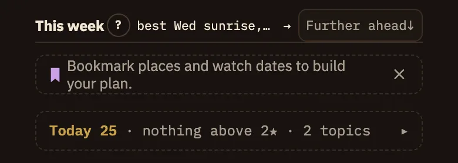
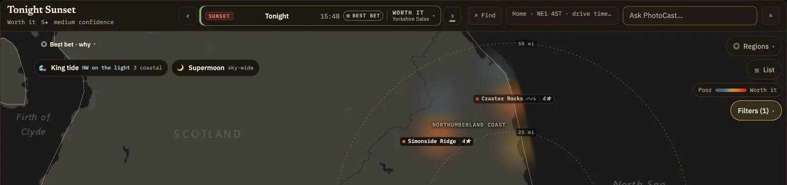

This week
This week is the forecast: the next four days laid out as a grid. Its heading stays at the top of the screen as you scroll through it, with the Further ahead ↓ button at the right and the week's best beside it.
The week's best is PhotoCast's own Best bet, written in the heading: best Fri sunrise, Crimdon Beach 4★ →. The stars are that place's own rating for that sunrise or sunset, so they can be lower than the best rating on the card, which counts every place. Tap it and the map opens on that sunrise or sunset with the place's callout open. On a phone the words are shortened with an ellipsis, and the full sentence is what a screen reader reads. With no Best bet to show, as on Lite, the heading stays on its own. The ? beside it explains what fixed and could still move mean.
The grid has one column per day, with that day's sunrise and sunset beneath it. Above the grid sits your Your places row, if you use it. Event lanes run under the dates, and the sunrise and sunset cards sit under the lanes.
Your places rowPro
With Pro, a row of one-line chips sits at the top of This week: one for each place or area you have bookmarked, best first. A chip reads like Crimdon Beach · Fri sunrise 4★: its best sunrise or sunset in the days PhotoCast has forecast, with the stars. Tapping it opens the map on that sunrise or sunset, focused on the place. Where a place has nothing worth a trip, it comes last, reads quieter, and its chip opens the place's own sheet instead. Watched dates are not here: see Watch a date.
- The row scrolls sideways. On a phone it snaps from chip to chip.
- A chip's figures are the forecast's own. A bookmark never changes a rating.
- With nothing bookmarked or watched yet, a single line takes the row's place, once: Bookmark places and watch dates to build your plan. Its ✕ dismisses it, and your first bookmark or watch ends it for good, even if you later remove everything. See Your places.

ProOn Lite you see the same one-time line with a Pro tag, which opens a short explanation of bookmarks and watched dates. Dismiss it and it does not come back.
Event lanes and quiet days
The page is laid out as one column per day, with that day's sunrise and sunset beneath it.
Event lanes
Hot topics are notable photographic conditions and events, such as a spring tide, a cloud inversion or a supermoon. Under the dates you'll see them as lanes: one row for each event, placed under the day it falls on. An event that lasts several days is one lane that stretches across every day it covers. Each lane shows the topic, a key figure and sometimes a tag. For example, a spring tide might read "4.8 m · run starts" and a cloud inversion "dawn · 9/10". More on fixed and could still move.
- A dotted left edge means the event began before the first day shown. A faded right edge means it runs on past the last day shown.
- PEAK marks the biggest day of an event that lasts several days.
- Tap a lane to open the map on the first sunrise or sunset it covers, when it has one.
- A dated event that already has a lane here is not listed again in Further ahead, so each event appears once.
A day with no lanes simply has nothing special forecast.
Quiet days
When nothing on a day is worth a trip, PhotoCast folds it to a single line, such as Wed 25 · nothing above 2★ ▸. A day folds only when every sunrise and sunset it shows is rated 2★ or lower, and it has no weather warning and no watched date. A window that has not been rated yet never counts as quiet, so a day with one never folds. On Lite, where the ratings are hidden, no day folds.
- Tap the line to open the day where it is. The same line stays in place, shows ▾ while the day is open, and keeps focus. Days you open stay open until you leave the page.
- On a phone the folded line also counts the day's lanes, such as · 1 topic, so a cloud inversion or a mist is never hidden without saying so.
- On a larger screen the day's heading and its lanes stay where they are, and the line sits where the sunrise card would be.



Sunrise and sunset cards
Each card is one sunrise or sunset. It shows:
- the time of the sunrise or sunset and a verdict: Worth it, Maybe or Poor
- the best rating within your selected drive time
- the Spread: how many locations within your selected drive time have each star rating
- a small map of the area in the forecast colours, with a few place names so you can get your bearings
- a note when the forecast has changed since the last update
- on coastal days, how many coastal locations have their preferred tide level at sunrise or sunset, such as "∿ 4 on tide" Pro
Colours fade where the forecast's confidence is lower, which is often, but not always, on later dates. The lowest confidence is marked provisional.
The spread
The spread shows how the ratings within your selected drive time are shared out, from one star on the left to five stars on the right, with the number of locations under each bar. Bars that lean to the right mean much of the area looks promising. A short bar on its own at the right means only a few locations do.
A hatched bar on the far left counts locations not yet rated. The spread ignores the Rated filter, so it always counts every location within your drive time. When too few locations are rated to give a fair picture, the spread shows how many are rated instead, such as "3/12 rated".
Each card counts only the locations set up for that sunrise or sunset. Some locations are set up for sunrise, some for sunset and some for both. Woodland is forecast at sunrise only, when mist is most likely. This means the sunrise and sunset cards for the same day often count a different number of locations.
A location set up for sunrise only is never rated at sunset. It isn't hidden or given a low score. PhotoCast simply doesn't forecast it for sunset, so it doesn't appear anywhere in that sunset card's spread.
Opening a sunrise or sunset
Tap a card to open that sunrise or sunset on the map. The map opens over the screen with the sunrise or sunset already selected, your drive time and rating filters carried over, and, when you have a home set, the view framed to show your home and the best place together, with that place's callout open. A lane or a Your places chip opens the map the same way. From a card the little map picture grows into the map, and ✕ or Escape shrinks it back into the card; Back and every other way in or out is instant, and with reduced motion set on your device the picture fades instead of growing. The map has the regions, a ☰ List of the places for that sunrise or sunset, best first, and the callout for each one. Use ‹ and › in the map's header to step to the previous or next sunrise or sunset. ✕ closes the map and returns you to the card, and so does your browser's Back button.
The map has its own web address, in the form #map/2026-12-03/sunrise, so you can bookmark a sunrise or sunset or send it to someone. The address never carries your home or your filters.
Tap a location for its own forecast: every sunrise and sunset over the coming days, the times of blue hour and golden hour, and the tide if it's on the coast. If a Met Office weather warning covers that location, a chip beside the day gives its level and weather type. From there you can also open the same sunrise or sunset on the map.

ProRed Sky and Golden Hour scores, the tide at the light, and leave-by times worked out from your drive time are available with Pro.
Best betPro
PhotoCast picks one Best bet across the whole few-day forecast: a particular sunrise or sunset and a region, usually with a named location and a short reason. There is at most one Also good alongside it, for when a second option is also worth a look.
This week shows the Best bet on the card for that sunrise or sunset, naming the region. The map marks the same sunrise or sunset in its window control and shows the pick in that region's panel.
It's written from the same forecast as the ratings, so it's a quick way to narrow down the possibilities when several places look similar.